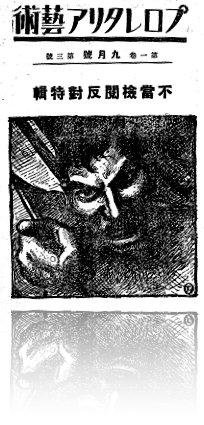

Jonathan E. Abel

EDUCATION
Princeton University, Graduate School, 1998-2005.
DISSERTATION—
“Pages Crossed: Tracing Literary Casualties Through the War in Japan and the United States.”
Advisors: Richard Okada, Christine Marran, Michael Wood, Eduardo Cadava, and Earl Miner.
University of Tokyo, Dept. of Information and Linguistic Sciences, 2002-2003.
Researcher. Advisor: Komori Yōichi.
Columbia University, Graduate School of Arts and Sciences, 1996-1997.
M.A. (1997), English and Comparative Literature.
University of Pennsylvania, School of Arts and Sciences, 1989-1993.
B.A. (1993) with honors. Majors: English Literature and International Relations.
AWARDS, GRANTS, AND FELLOWSHIPS
CULPA, Golden Nugget for Excellence in Teaching, Students’ Choice Award, Columbia University, 2006.
Marion Levy Dissertation Completion Fellowship, 2004-2005.
Eric Kahler Summer Fellowship, Archival Research Grant, Summer 2003.
Blakemore Foundation Language Fellowship, 2001-2002.
DAAD German Academic Exchange Service Language Grant, Summer 2001.
Joseph E. Croft Summer Fellowship, Classical Studies Grant, Summer 2000.
Mary Cross Fellowship, Summer Fellowship, Summer 1999.
Council for Regional Studies, Center for International Studies Fellowship, Summer 1999.
East Asian Studies, Summer Fellowship, Summers 1998, 1999.
Bayard Henry, Class of 1876, Graduate Fellowship, 1998-1999.
Princeton University multiyear Ph.D. fellowship, Fall 1998-2003.